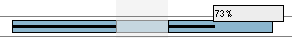

Int�ractions sur les t�ches
D�placer une ou plusieurs t�ches
Vous pouvez directement d�placer les t�ches sur le graphique � l'aide de
la souris.
- s�lectionnez une ou plusieurs t�ches (pour s�lectionner plusieurs t�ches,
maintenez la touche CRTL enfonc�e tout en cliquant sur les t�ches
que vous voulez s�lectionner) ;
- rel�chez la touche CRTL si vous l'aviez enfonc�e ;
- cliquez avec le bouton du milieu de la souris sur une des t�ches
s�lectionn�es et maintenez le enfonc� ;
- d�placez votre souris (vers la droite ou la gauche) pour d�placer les
t�ches s�lectionn�es ;
- rel�chez le bouton du milieu de la souris � l'endroit o� vous voulez
d�poser les t�ches.
ATTENTION : Une fois le bouton rel�ch�, GanttProject
recalcule les d�pendances entre les t�ches, il se peut que certaines t�ches soient
alors d�plac�es pour satisfaire les d�pendances qui les concernent.
Modifier la dur�e d'une t�che
Vous pouvez modifier la dur�e d'une t�che directement sur le diagramme de Gantt
� l'aide de votre souris.
- d�placer le curseur de votre souris � l'une des extr�mit�s du rectangle
repr�sentant la t�che dont vous voulez modifier la dur�e ;
- un curseur particulier pour le redimensionnement appara�t ;
- cliquez sur le bouton gauche de votre souris et maintenez le enfonc� ;
- d�placer votre souris et rel�chez le bouton pour modifier la dur�e de la t�che.
Modifier l'avanc�e d'une t�che
Vous pouvez modifier l'avanc�e d'une t�che directement sur le diagramme de Gantt
� l'aide de votre souris. L'avanc�e d'une t�che se mat�rialise par une barre noire
horizontale dans le rectangle repr�sentant une t�che.

Pour modifier l'avanc�e d'une t�che :
- d�placez le curseur de votre souris sur la barre d'avanc�e (si l'avanc�e
est �gale � 0 %, la barre est invisible, il faut d�placer votre souris �
l'extr�mit� gauche de la t�che) ;
- d�s que le curseur appara�t maintenez
le bouton gauche de la souris enfonc� ;
- d�placez votre souris pour modifier l'avanc�e de la t�che.
Cr�er des relations entre t�ches
Vous pouvez cr�er des relations entre t�ches directement sur le diagramme de Gantt.
Cependant, les relations cr�er ainsi ne seront que du type Fin-D�but initiallement.
- cliquez et maintenez le boutons gauche de la souris sur une t�che
(cette t�che pr�c�dera celle que vous indiquerez plus tard) ;
- d�placez votre souris sur la t�che qui doit d�pendre de la premi�re ;
- une fl�che se dessine (img 1.);
- rel�chez le bouton de la souris, la relation Fin-D�but est cr��e (img 2.).